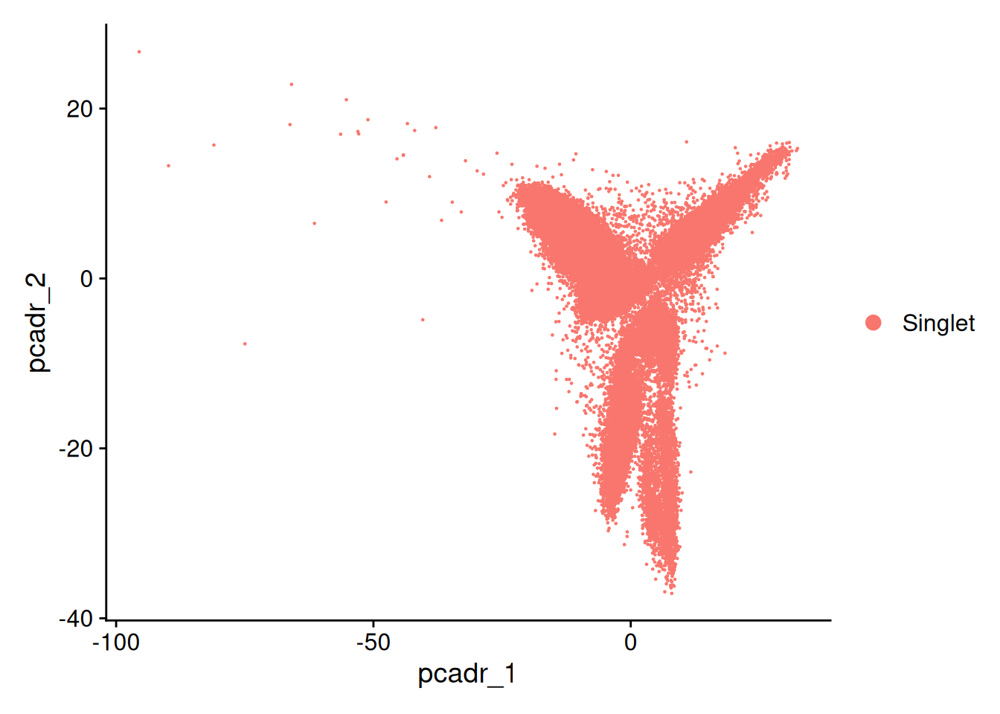
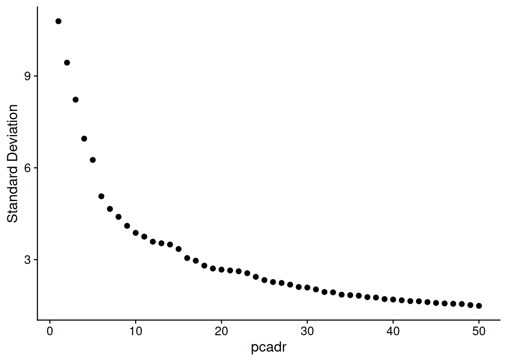
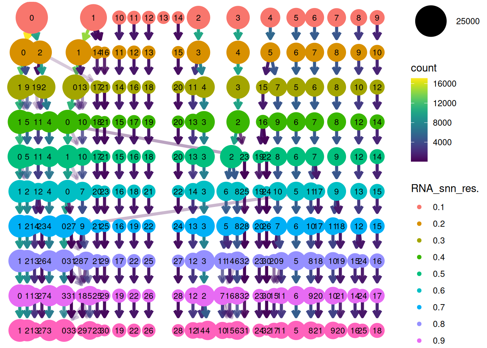

01_QC3
YasmineIlli
2026-07-22
Last updated: 2026-07-22
Checks: 7 0
Knit directory: SingleCell_skin/
This reproducible R Markdown analysis was created with workflowr (version 1.7.2). The Checks tab describes the reproducibility checks that were applied when the results were created. The Past versions tab lists the development history.
Great! Since the R Markdown file has been committed to the Git repository, you know the exact version of the code that produced these results.
Great job! The global environment was empty. Objects defined in the global environment can affect the analysis in your R Markdown file in unknown ways. For reproduciblity it’s best to always run the code in an empty environment.
The command set.seed(20260714) was run prior to running
the code in the R Markdown file. Setting a seed ensures that any results
that rely on randomness, e.g. subsampling or permutations, are
reproducible.
Great job! Recording the operating system, R version, and package versions is critical for reproducibility.
Nice! There were no cached chunks for this analysis, so you can be confident that you successfully produced the results during this run.
Great job! Using relative paths to the files within your workflowr project makes it easier to run your code on other machines.
Great! You are using Git for version control. Tracking code development and connecting the code version to the results is critical for reproducibility.
The results in this page were generated with repository version 62079e0. See the Past versions tab to see a history of the changes made to the R Markdown and HTML files.
Note that you need to be careful to ensure that all relevant files for
the analysis have been committed to Git prior to generating the results
(you can use wflow_publish or
wflow_git_commit). workflowr only checks the R Markdown
file, but you know if there are other scripts or data files that it
depends on. Below is the status of the Git repository when the results
were generated:
Ignored files:
Ignored: .RData
Ignored: .Rhistory
Ignored: .Rproj.user/
Ignored: analysis/figure/
Ignored: analysis/output/
Ignored: output/01_QC/
Untracked files:
Untracked: renv/
Unstaged changes:
Modified: .Rprofile
Modified: .gitignore
Note that any generated files, e.g. HTML, png, CSS, etc., are not included in this status report because it is ok for generated content to have uncommitted changes.
These are the previous versions of the repository in which changes were
made to the R Markdown (analysis/01_QC3.Rmd) and HTML
(docs/01_QC3.html) files. If you’ve configured a remote Git
repository (see ?wflow_git_remote), click on the hyperlinks
in the table below to view the files as they were in that past version.
| File | Version | Author | Date | Message |
|---|---|---|---|---|
| Rmd | 62079e0 | YasmineIlli | 2026-07-22 | wflow_git_commit("analysis/01_QC3.Rmd") |
(adapted from Lumeng Li’s code)
Setup
library(Seurat)
library(tidyverse)
library(here)
library(clustree)
library(harmony)
library(patchwork)
library(presto)
library(dittoSeq)# Colour palette
palette_primary <- "#015EA8" # presentation text only, use minimally
palette_mauve <- "#B56576" # main fill colour
palette_blush <- "#FAE8EB" # secondary / light fill
palette_navy <- "#0A014F" # contrast fill
palette_brown <- "#3F220F" # contrast fill
# Discrete palette for categorical plots (clusters, samples, groups)
palette_discrete <- c(palette_mauve,
palette_navy,
palette_brown,
palette_blush,
palette_primary)
# Continuous ramp: light blush -> mauve -> navy
palette_continuous <- c(palette_blush,
palette_mauve,
palette_navy)
theme_set(theme_minimal())data_output_directory <- here("output/01_QC/data/QC3/")
plots_output_directory <- here("output/01_QC/plots/QC3/")
RObjects_output_directory <- here("output/01_QC/RObjects/QC3/")MergedObject <- readRDS(here("output/01_QC/RObjects/QC2/01_QC2_MergedObject_after_doublet_removal.rds"))#remove unused resolutions, clean up meta.data
MergedObject@meta.data$RNA_snn_res.0.1 <- NULL
MergedObject@meta.data$RNA_snn_res.0.2 <- NULL
MergedObject@meta.data$RNA_snn_res.0.4 <- NULL
MergedObject@meta.data$RNA_snn_res.0.5 <- NULL
MergedObject@meta.data$RNA_snn_res.0.6 <- NULL
MergedObject@meta.data$RNA_snn_res.0.7 <- NULL
MergedObject@meta.data$RNA_snn_res.0.8 <- NULL
MergedObject@meta.data$RNA_snn_res.0.9 <- NULL
MergedObject@meta.data$RNA_snn_res.1 <- NULL
head(MergedObject@meta.data) orig.ident nCount_RNA nFeature_RNA percent.mt
HC001_AAACCCAAGTTATGGA-1 HC001 6083 2257 18.411968
HC001_AAACCCACAATGAACA-1 HC001 9596 2841 7.690704
HC001_AAACCCACACCACTGG-1 HC001 13198 3137 17.608729
HC001_AAACCCAGTGGATTTC-1 HC001 20340 3928 11.607670
HC001_AAACCCATCCTAAACG-1 HC001 9317 2735 6.053451
HC001_AAACCCATCTAAACGC-1 HC001 19053 3742 11.530992
percent.hb percent.ribo RNA_snn_res.0.3
HC001_AAACCCAAGTTATGGA-1 0.000000000 9.156666 20
HC001_AAACCCACAATGAACA-1 0.000000000 12.932472 3
HC001_AAACCCACACCACTGG-1 0.007576906 26.466131 0
HC001_AAACCCAGTGGATTTC-1 0.009832842 30.776794 0
HC001_AAACCCATCCTAAACG-1 0.010733069 19.437587 3
HC001_AAACCCATCTAAACGC-1 0.015745552 33.910670 17
seurat_clusters doublet nCount_norm
HC001_AAACCCAAGTTATGGA-1 27 Singlet 3052.648
HC001_AAACCCACAATGAACA-1 2 Singlet 3294.847
HC001_AAACCCACACCACTGG-1 1 Singlet 3040.490
HC001_AAACCCAGTGGATTTC-1 4 Singlet 3056.211
HC001_AAACCCATCCTAAACG-1 14 Singlet 3176.429
HC001_AAACCCATCTAAACGC-1 25 Singlet 2951.497Check data
# Median library size - used below as the normalisation scale factor
median_counts <- median(MergedObject$nCount_RNA)
median_counts[1] 10057p <- ggplot(MergedObject@meta.data,
aes(x = nCount_RNA)) +
geom_histogram(bins = 20,
fill = palette_mauve,
colour = "white") +
labs(x = "nCount_RNA",
y = "Count")
p
ggsave(filename = file.path(plots_output_directory, "01_QC3_nCount_histogram.png"),
plot = p,
width = 8,
height = 6)We are going to normalize the data again because doublet removal and integration can change the data. But first we need to check if what we would be normalizing. We only want to normalize raw counts not already normalized data, since this normalizing normalized data would distort the values.
range(LayerData(MergedObject,
layer = "counts")@x)[1] 1 14971The output should be whole numbers e.g. 0 4523. In that case we can normalize the data. If it’s not whole numbers e.g. 0.00 12.743 the values are already normalized. Normally NormalizeData() takes counts and puts normalized data in data slots, so it should be fine, but sometimes it can be corrupted so it is always safer to check.
Standard Pipeline
MergedObject <- NormalizeData(MergedObject,
scale.factor = median(MergedObject$nCount_RNA))Now we can visualize the counts and data before and after normalization. Normalization does not change nCount_RNA so doing a histogram of nCount_RNA (like Lumeng did) is not useful for visualizing normalization.
# Subsample non-zero entries from both layers for a fast distribution comparison
n_sample <- 1e5
raw_values <- LayerData(MergedObject,
layer = "counts")@x
norm_values <- LayerData(MergedObject,
layer = "data")@x
expression_df <- bind_rows(tibble(expression = sample(raw_values,
n_sample),
type = "Raw counts"),
tibble(expression = sample(norm_values,
n_sample),
type = "Normalized data")) |>
mutate(type = fct_relevel(type,
"Raw counts",
"Normalized data"))
p <- ggplot(expression_df,
aes(x = expression)) +
geom_histogram(bins = 50,
fill = palette_mauve,
colour = "white") +
facet_wrap(~ type,
scales = "free") +
labs(x = "Expression",
y = "Count")
p
ggsave(filename = file.path(plots_output_directory, "01_QC3_nCount_histogram_bf_af_normalization.png"),
plot = p,
width = 10,
height = 5)Raw counts usually have an extreme right skew with most values near 0 and a long tail. Normalized data should be compressed and more symmetric with values roughly from 0-10.
Now we are going to run all standard steps again, because each step that changes the number of cells (like doublet removal) can have downstream effects, so we should do it again to get the final qc-ed object.
MergedObject <- FindVariableFeatures(MergedObject,
selection.method = "vst",
nfeatures = 2000)
top10 <- head(VariableFeatures(MergedObject), 10)
top10 [1] "DCD" "SCGB2A2" "SLURP1" "MUCL1" "CCL4" "CCL3" "CCL3L3"
[8] "PIP" "CXCL9" "CCL4L2" vf_plot <- VariableFeaturePlot(MergedObject)
vf_plot <- LabelPoints(plot = vf_plot,
points = top10,
repel = TRUE)When using repel, set xnudge and ynudge to 0 for optimal resultsvf_plotWarning in scale_x_log10(): log-10 transformation introduced infinite values.
ggsave(filename = file.path(plots_output_directory, "01_QC3_VariableFeatures.png"),
plot = vf_plot,
width = 8,
height = 6)Warning in scale_x_log10(): log-10 transformation introduced infinite values.set.seed(123)
MergedObject <- ScaleData(MergedObject,
features = VariableFeatures(MergedObject), # Changed this from all genes to only variablefeatures to make it computationally less expensive (run faster and less memory used) and the only downstream process using it for now is PCA which will run on variablefeatures only anyways
vars.to.regress = c("percent.mt",
"percent.hb"))set.seed(123)
#approx=FALSE for reproducibility regardless of the CPU
#because approx=FALSE calculates all different PCs we set a max to npcs=50, because we do not need more than 1000
MergedObject <- RunPCA(MergedObject,
features = VariableFeatures(object = MergedObject),
verbose = FALSE,
approx = FALSE,
npcs = 50,
reduction.name = "pca_DR")Warning: Key 'PC_' taken, using 'pcadr_' insteadp <- DimPlot(MergedObject,
reduction = "pca_DR")
p
ggsave(filename = file.path(plots_output_directory,
"01_QC3_PC_DimPlot.png"),
plot = p,
width = 10)set.seed(123)
p <- DimHeatmap(MergedObject,
reduction = "pca_DR",
dims = 1:18,
cells = 500,
balanced = TRUE,
fast = FALSE # To make it return a ggplot object
) &
scale_fill_gradient2(low = palette_navy,
mid = palette_blush,
high = palette_mauve,
midpoint = 0)
p
ggsave(filename = file.path(plots_output_directory,
"01_QC3_PC_Heatmap.png"),
plot = p,
height = 20,
width = 18,
dpi = 900)p <- ElbowPlot(MergedObject,
ndims = 50,
reduction = "pca_DR")
p
ggsave(filename = file.path(plots_output_directory,
"01_QC3_ElbowPlot.png"),
plot = p)PC selection criteria:
co1: number of PCs reaching >90% cumulative variance while each individual PC contributes <5%
co2: the last PC that still shows a >0.05% drop in variance relative to the previous PC
The lower of the two is used.
# approx = FALSE returns stdev for all PCs regardless of npcs, so slice to 50
stdv <- MergedObject[["pca_DR"]]@stdev[1:50]
percent_stdv <- (stdv/sum(stdv)) * 100
cumulative <- cumsum(percent_stdv)
# co1: cumulative variance above 90% and individual contribution below 5%
co1 <- which(cumulative > 90 & percent_stdv < 5)[1]
# co2: last PC with a drop in variance greater than 0.05 percentage points
co2 <- sort(which((percent_stdv[1:length(percent_stdv) - 1] -
percent_stdv[2:length(percent_stdv)]) >
0.05),
decreasing = T)[1] + 1
#select the number of PCs (dims)
selected_dim <- min(co1, co2)
c(co1 = co1,
co2 = co2,
selected_dim = selected_dim) co1 co2 selected_dim
41 32 32 Harmony integration
set.seed(123)
MergedObject <- RunHarmony(object = MergedObject,
group.by.vars = "orig.ident",
reduction = "pca_DR",
reduction.save = "harmony_DR",
verbose = FALSE,
dims.use = 1:selected_dim)
#Check that harmony reduction is saved and the seurat object is ok
Reductions(MergedObject)[1] "pca" "umap" "harmony" "umap_harmony" "pca_DR"
[6] "harmony_DR" set.seed(123)
# reduction.name keeps the pre-doublet-removal UMAPs intact for comparison below
MergedObject <- RunUMAP(MergedObject,
reduction = "harmony_DR",
dims = 1:selected_dim,
reduction.name = "umap_harmony_DR")We can compare the umaps on the doublet removed data set with the RunUMAP before integration and doublet removal, with RunUMAP after integration and before doublet removal and the RunUMAP after integration and doublet removal:
# Build all six panels in one pass over the reduction names
umap_reductions <- c("umap",
"umap_harmony",
"umap_harmony_DR")
umap_panels <- map(umap_reductions,
~ DimPlot(MergedObject,
reduction = .x,
cols = palette_discrete) |
DimPlot(MergedObject,
reduction = .x,
group.by = "orig.ident"))
p <- wrap_plots(umap_panels,
ncol = 1)
p
ggsave(filename = file.path(plots_output_directory,
"01_QC3_UMAP_comparison.png"),
plot = p,
width = 14,
height = 18)Clustering
set.seed(123)
MergedObject <- FindNeighbors(MergedObject,
reduction = "harmony_DR",
dims = 1:selected_dim)
MergedObject <- FindClusters(MergedObject,
resolution = seq(0.1,
1.0,
by = 0.1))Modularity Optimizer version 1.3.0 by Ludo Waltman and Nees Jan van Eck
Number of nodes: 91948
Number of edges: 3292353
Running Louvain algorithm...
Maximum modularity in 10 random starts: 0.9822
Number of communities: 15
Elapsed time: 44 seconds
Modularity Optimizer version 1.3.0 by Ludo Waltman and Nees Jan van Eck
Number of nodes: 91948
Number of edges: 3292353
Running Louvain algorithm...
Maximum modularity in 10 random starts: 0.9719
Number of communities: 17
Elapsed time: 43 seconds
Modularity Optimizer version 1.3.0 by Ludo Waltman and Nees Jan van Eck
Number of nodes: 91948
Number of edges: 3292353
Running Louvain algorithm...
Maximum modularity in 10 random starts: 0.9631
Number of communities: 22
Elapsed time: 38 seconds
Modularity Optimizer version 1.3.0 by Ludo Waltman and Nees Jan van Eck
Number of nodes: 91948
Number of edges: 3292353
Running Louvain algorithm...
Maximum modularity in 10 random starts: 0.9560
Number of communities: 22
Elapsed time: 41 seconds
Modularity Optimizer version 1.3.0 by Ludo Waltman and Nees Jan van Eck
Number of nodes: 91948
Number of edges: 3292353
Running Louvain algorithm...
Maximum modularity in 10 random starts: 0.9494
Number of communities: 24
Elapsed time: 46 seconds
Modularity Optimizer version 1.3.0 by Ludo Waltman and Nees Jan van Eck
Number of nodes: 91948
Number of edges: 3292353
Running Louvain algorithm...
Maximum modularity in 10 random starts: 0.9434
Number of communities: 26
Elapsed time: 37 seconds
Modularity Optimizer version 1.3.0 by Ludo Waltman and Nees Jan van Eck
Number of nodes: 91948
Number of edges: 3292353
Running Louvain algorithm...
Maximum modularity in 10 random starts: 0.9379
Number of communities: 29
Elapsed time: 40 seconds
Modularity Optimizer version 1.3.0 by Ludo Waltman and Nees Jan van Eck
Number of nodes: 91948
Number of edges: 3292353
Running Louvain algorithm...
Maximum modularity in 10 random starts: 0.9331
Number of communities: 33
Elapsed time: 40 seconds
Modularity Optimizer version 1.3.0 by Ludo Waltman and Nees Jan van Eck
Number of nodes: 91948
Number of edges: 3292353
Running Louvain algorithm...
Maximum modularity in 10 random starts: 0.9278
Number of communities: 33
Elapsed time: 36 seconds
Modularity Optimizer version 1.3.0 by Ludo Waltman and Nees Jan van Eck
Number of nodes: 91948
Number of edges: 3292353
Running Louvain algorithm...
Maximum modularity in 10 random starts: 0.9232
Number of communities: 34
Elapsed time: 38 secondshead(MergedObject@meta.data) orig.ident nCount_RNA nFeature_RNA percent.mt
HC001_AAACCCAAGTTATGGA-1 HC001 6083 2257 18.411968
HC001_AAACCCACAATGAACA-1 HC001 9596 2841 7.690704
HC001_AAACCCACACCACTGG-1 HC001 13198 3137 17.608729
HC001_AAACCCAGTGGATTTC-1 HC001 20340 3928 11.607670
HC001_AAACCCATCCTAAACG-1 HC001 9317 2735 6.053451
HC001_AAACCCATCTAAACGC-1 HC001 19053 3742 11.530992
percent.hb percent.ribo RNA_snn_res.0.3
HC001_AAACCCAAGTTATGGA-1 0.000000000 9.156666 19
HC001_AAACCCACAATGAACA-1 0.000000000 12.932472 2
HC001_AAACCCACACCACTGG-1 0.007576906 26.466131 0
HC001_AAACCCAGTGGATTTC-1 0.009832842 30.776794 0
HC001_AAACCCATCCTAAACG-1 0.010733069 19.437587 2
HC001_AAACCCATCTAAACGC-1 0.015745552 33.910670 17
seurat_clusters doublet nCount_norm RNA_snn_res.0.1
HC001_AAACCCAAGTTATGGA-1 27 Singlet 3052.648 13
HC001_AAACCCACAATGAACA-1 3 Singlet 3294.847 0
HC001_AAACCCACACCACTGG-1 0 Singlet 3040.490 1
HC001_AAACCCAGTGGATTTC-1 7 Singlet 3056.211 1
HC001_AAACCCATCCTAAACG-1 13 Singlet 3176.429 0
HC001_AAACCCATCTAAACGC-1 23 Singlet 2951.497 1
RNA_snn_res.0.2 RNA_snn_res.0.4 RNA_snn_res.0.5
HC001_AAACCCAAGTTATGGA-1 2 11 11
HC001_AAACCCACAATGAACA-1 2 4 4
HC001_AAACCCACACCACTGG-1 1 0 1
HC001_AAACCCAGTGGATTTC-1 1 0 1
HC001_AAACCCATCCTAAACG-1 2 11 11
HC001_AAACCCATCTAAACGC-1 14 18 17
RNA_snn_res.0.6 RNA_snn_res.0.7 RNA_snn_res.0.8
HC001_AAACCCAAGTTATGGA-1 12 23 26
HC001_AAACCCACAATGAACA-1 4 4 4
HC001_AAACCCACACCACTGG-1 0 0 0
HC001_AAACCCAGTGGATTTC-1 7 0 7
HC001_AAACCCATCCTAAACG-1 12 14 13
HC001_AAACCCATCTAAACGC-1 20 21 21
RNA_snn_res.0.9 RNA_snn_res.1
HC001_AAACCCAAGTTATGGA-1 27 27
HC001_AAACCCACAATGAACA-1 4 3
HC001_AAACCCACACCACTGG-1 3 0
HC001_AAACCCAGTGGATTTC-1 5 7
HC001_AAACCCATCCTAAACG-1 13 13
HC001_AAACCCATCTAAACGC-1 25 23p <- clustree(MergedObject@meta.data[, grep("RNA_snn_res",
colnames(MergedObject@meta.data))],
prefix = "RNA_snn_res.")
p
ggsave(filename = file.path(plots_output_directory,
"01_QC3_clustree.png"),
plot = p)set.seed(123)
p <- DimPlot(MergedObject,
reduction = "umap_harmony_DR",
group.by = c("RNA_snn_res.0.1",
"RNA_snn_res.0.2",
"RNA_snn_res.0.3",
"RNA_snn_res.0.4",
"RNA_snn_res.0.5",
"RNA_snn_res.0.6",
"RNA_snn_res.0.7",
"RNA_snn_res.0.8",
"RNA_snn_res.0.9",
"RNA_snn_res.1"))
p & NoLegend()
ggsave(filename = file.path(plots_output_directory,
"01_QC3_DimPlotPerRes.png"),
height = 10,
width = 16)selected_resolution <- "RNA_snn_res.0.3"
p <- DimPlot(MergedObject,
reduction = "umap_harmony_DR",
group.by = selected_resolution,
label = TRUE) |
DimPlot(MergedObject,
reduction = "umap_harmony_DR",
group.by = "orig.ident")
p
ggsave(filename = file.path(plots_output_directory,
"01_QC3_DimPlotSelectedRes.png"),
width = 14,
height = 8)Adding patient groups
We are going to add the individual patients to the following groups:
HC: healthy controls
Pre: preSSc
S: eSSc
PRP: Primary Raynauds
MergedObject@meta.data <- MergedObject@meta.data |>
mutate(group.ident = case_when(grepl("^RaHC", orig.ident) ~ "PRP",
grepl("^HC", orig.ident) ~ "HC",
grepl("^V", orig.ident) ~ "Pre",
grepl("^S", orig.ident) ~ "S",
TRUE ~ NA_character_))
# Verify every cell was assigned and the mapping is as expected
table(MergedObject$orig.ident,
MergedObject$group.ident)
HC Pre PRP S
HC001 3394 0 0 0
HC002 2143 0 0 0
HC003 1225 0 0 0
HC004 1651 0 0 0
HC005 4793 0 0 0
HC006 2634 0 0 0
RaHC001 0 0 7253 0
RaHC002 0 0 6867 0
RaHC003 0 0 2953 0
RaHC004 0 0 3981 0
S3001 0 0 0 1897
S3006 0 0 0 1578
S3008 0 0 0 6571
S3011 0 0 0 5335
S3012 0 0 0 4375
S3013 0 0 0 1983
S3015 0 0 0 4178
V002 0 3396 0 0
V003 0 1984 0 0
V007 0 4363 0 0
V009 0 4993 0 0
V010 0 3769 0 0
V014 0 2205 0 0
V016 0 1249 0 0
V018 0 3127 0 0
V019 0 4051 0 0UMAPs and QC Plots
p <- DimPlot(MergedObject,
reduction = "umap_harmony_DR",
group.by = selected_resolution,
split.by = "group.ident")
p
ggsave(filename = file.path(plots_output_directory,
"01_QC3_DimPlotperGroup.png"),
plot = p,
width = 14,
height = 8)#Check if the group idents are correct
p <- DimPlot(MergedObject,
reduction = "umap_harmony_DR",
group.by = "group.ident",
split.by = "group.ident",
cols = palette_discrete)
p
ggsave(filename = file.path(plots_output_directory,
"01_QC3_DimPlotGroups.png"),
plot = p,
width = 14,
height = 8)p <- VlnPlot(MergedObject,
group.by = selected_resolution,
pt.size = 0,
features = c("nFeature_RNA",
"nCount_RNA",
"percent.mt",
"percent.hb",
"percent.ribo"),
ncol = 2)
p
ggsave(filename = file.path(plots_output_directory,
"01_QC3_VlnPlotFinalQCMetrics.png"),
plot = p,
width = 12,
height = 8)p <- VlnPlot(MergedObject,
group.by = "orig.ident",
pt.size = 0,
features = c("nFeature_RNA",
"nCount_RNA",
"percent.mt",
"percent.hb",
"percent.ribo"),
ncol = 2)
p
ggsave(filename = file.path(plots_output_directory,
"01_QC3_VlnPlotFinalQCMetrics_perSample.png"),
plot = p,
width = 12,
height = 8)p <- VlnPlot(MergedObject,
group.by = "group.ident",
pt.size = 0,
features = c("nFeature_RNA",
"nCount_RNA",
"percent.mt",
"percent.hb",
"percent.ribo"),
ncol = 2)
p
ggsave(filename = file.path(plots_output_directory,
"01_QC3_VlnPlotFinalQCMetrics_perGroup.png"),
plot = p,
width = 12,
height = 8)Summary
Cells per sample:
# Cell counts per sample and per group in one table
cell_counts <- MergedObject@meta.data %>%
count(orig.ident,
group.ident,
name = "n_cells") %>%
arrange(group.ident,
orig.ident)
cell_counts orig.ident group.ident n_cells
1 HC001 HC 3394
2 HC002 HC 2143
3 HC003 HC 1225
4 HC004 HC 1651
5 HC005 HC 4793
6 HC006 HC 2634
7 RaHC001 PRP 7253
8 RaHC002 PRP 6867
9 RaHC003 PRP 2953
10 RaHC004 PRP 3981
11 V002 Pre 3396
12 V003 Pre 1984
13 V007 Pre 4363
14 V009 Pre 4993
15 V010 Pre 3769
16 V014 Pre 2205
17 V016 Pre 1249
18 V018 Pre 3127
19 V019 Pre 4051
20 S3001 S 1897
21 S3006 S 1578
22 S3008 S 6571
23 S3011 S 5335
24 S3012 S 4375
25 S3013 S 1983
26 S3015 S 4178Cells per group:
cell_counts_perGroup <- cell_counts %>%
group_by(group.ident) %>%
summarize(sum(n_cells)) %>%
ungroup() %>%
mutate(
sample_size = case_when(
group.ident == "HC" ~ 6,
group.ident == "PRP" ~ 4,
group.ident == "Pre" ~ 9,
group.ident == "S" ~ 7
)
)
cell_counts_perGroup# A tibble: 4 × 3
group.ident `sum(n_cells)` sample_size
<chr> <int> <dbl>
1 HC 15840 6
2 PRP 21054 4
3 Pre 29137 9
4 S 25917 7total_cells <- sum(cell_counts$n_cells)Total number of cells: 91948.
saveRDS(MergedObject,
file = file.path(RObjects_output_directory,
"01_QC3_FinalMergedObject.rds"))SessionInfo
sessionInfo()R version 4.5.2 (2025-10-31)
Platform: x86_64-pc-linux-gnu
Running under: Ubuntu 24.04.3 LTS
Matrix products: default
BLAS: /usr/lib/x86_64-linux-gnu/openblas-pthread/libblas.so.3
LAPACK: /usr/lib/x86_64-linux-gnu/openblas-pthread/libopenblasp-r0.3.26.so; LAPACK version 3.12.0
locale:
[1] LC_CTYPE=en_US.UTF-8 LC_NUMERIC=C
[3] LC_TIME=en_US.UTF-8 LC_COLLATE=en_US.UTF-8
[5] LC_MONETARY=en_US.UTF-8 LC_MESSAGES=en_US.UTF-8
[7] LC_PAPER=en_US.UTF-8 LC_NAME=C
[9] LC_ADDRESS=C LC_TELEPHONE=C
[11] LC_MEASUREMENT=en_US.UTF-8 LC_IDENTIFICATION=C
time zone: Etc/UTC
tzcode source: system (glibc)
attached base packages:
[1] stats graphics grDevices datasets utils methods base
other attached packages:
[1] future_1.75.0 dittoSeq_1.22.0 presto_1.0.0 data.table_1.18.4
[5] patchwork_1.3.2 harmony_2.0.5 Rcpp_1.1.2 clustree_0.5.1
[9] ggraph_2.2.2 here_1.0.2 lubridate_1.9.5 forcats_1.0.1
[13] stringr_1.6.0 dplyr_1.2.1 purrr_1.2.2 readr_2.2.0
[17] tidyr_1.3.2 tibble_3.3.1 ggplot2_4.0.3 tidyverse_2.0.0
[21] Seurat_5.5.1 SeuratObject_5.4.0 sp_2.2-1 workflowr_1.7.2
loaded via a namespace (and not attached):
[1] RcppAnnoy_0.0.23 splines_4.5.2
[3] later_1.4.4 polyclip_1.10-7
[5] fastDummies_1.7.6 lifecycle_1.0.5
[7] rprojroot_2.1.1 globals_0.19.1
[9] processx_3.8.6 lattice_0.22-7
[11] MASS_7.3-65 backports_1.5.1
[13] magrittr_2.0.4 plotly_4.12.0
[15] sass_0.4.10 rmarkdown_2.30
[17] jquerylib_0.1.4 yaml_2.3.11
[19] httpuv_1.6.16 otel_0.2.0
[21] sctransform_0.4.3 spam_2.11-4
[23] spatstat.sparse_3.2-0 reticulate_1.46.0
[25] cowplot_1.2.0 pbapply_1.7-4
[27] RColorBrewer_1.1-3 abind_1.4-8
[29] Rtsne_0.17 GenomicRanges_1.62.1
[31] BiocGenerics_0.56.0 tweenr_2.0.3
[33] git2r_0.36.2 IRanges_2.44.0
[35] S4Vectors_0.48.0 ggrepel_0.9.8
[37] irlba_2.3.7 listenv_1.0.0
[39] spatstat.utils_3.2-3 pheatmap_1.0.13
[41] goftest_1.2-3 RSpectra_0.16-2
[43] spatstat.random_3.5-0 fitdistrplus_1.2-6
[45] parallelly_1.48.0 codetools_0.2-20
[47] DelayedArray_0.36.0 ggforce_0.5.0
[49] tidyselect_1.2.1 farver_2.1.2
[51] viridis_0.6.5 matrixStats_1.5.0
[53] stats4_4.5.2 spatstat.explore_3.8-1
[55] Seqinfo_1.0.0 jsonlite_2.0.0
[57] tidygraph_1.3.1 progressr_1.0.0
[59] ggridges_0.5.7 survival_3.8-3
[61] systemfonts_1.3.2 tools_4.5.2
[63] ragg_1.5.2 ica_1.0-3
[65] glue_1.8.0 SparseArray_1.10.8
[67] gridExtra_2.3.1 xfun_0.54
[69] MatrixGenerics_1.22.0 withr_3.0.3
[71] BiocManager_1.30.27 fastmap_1.2.0
[73] callr_3.7.6 digest_0.6.39
[75] timechange_0.4.0 R6_2.6.1
[77] mime_0.13 textshaping_1.0.5
[79] colorspace_2.1-3 scattermore_1.2
[81] tensor_1.5.1 spatstat.data_3.1-9
[83] RhpcBLASctl_0.23-42 utf8_1.2.6
[85] generics_0.1.4 renv_1.2.3
[87] graphlayouts_1.2.4 httr_1.4.8
[89] htmlwidgets_1.6.4 S4Arrays_1.10.1
[91] whisker_0.4.1 uwot_0.2.4
[93] pkgconfig_2.0.3 gtable_0.3.6
[95] lmtest_0.9-40 S7_0.2.2
[97] XVector_0.50.0 SingleCellExperiment_1.32.0
[99] htmltools_0.5.8.1 dotCall64_1.2
[101] scales_1.4.0 Biobase_2.70.0
[103] png_0.1-9 spatstat.univar_3.2-0
[105] knitr_1.50 rstudioapi_0.17.1
[107] tzdb_0.5.0 reshape2_1.4.5
[109] checkmate_2.3.4 nlme_3.1-168
[111] cachem_1.1.0 zoo_1.8-15
[113] KernSmooth_2.23-26 vipor_0.4.7
[115] parallel_4.5.2 miniUI_0.1.2
[117] ggrastr_1.0.2 pillar_1.11.1
[119] grid_4.5.2 vctrs_0.7.3
[121] RANN_2.6.2 promises_1.5.0
[123] xtable_1.8-8 cluster_2.1.8.1
[125] beeswarm_0.4.0 evaluate_1.0.5
[127] cli_3.6.5 compiler_4.5.2
[129] rlang_1.3.0 future.apply_1.20.2
[131] labeling_0.4.3 ps_1.9.3
[133] ggbeeswarm_0.7.3 getPass_0.2-4
[135] plyr_1.8.9 fs_1.6.6
[137] stringi_1.8.7 viridisLite_0.4.3
[139] deldir_2.0-4 lazyeval_0.2.3
[141] spatstat.geom_3.8-1 Matrix_1.7-4
[143] RcppHNSW_0.7.0 hms_1.1.4
[145] shiny_1.14.0 SummarizedExperiment_1.40.0
[147] ROCR_1.0-12 igraph_2.3.3
[149] memoise_2.0.1 bslib_0.9.0
sessionInfo()R version 4.5.2 (2025-10-31)
Platform: x86_64-pc-linux-gnu
Running under: Ubuntu 24.04.3 LTS
Matrix products: default
BLAS: /usr/lib/x86_64-linux-gnu/openblas-pthread/libblas.so.3
LAPACK: /usr/lib/x86_64-linux-gnu/openblas-pthread/libopenblasp-r0.3.26.so; LAPACK version 3.12.0
locale:
[1] LC_CTYPE=en_US.UTF-8 LC_NUMERIC=C
[3] LC_TIME=en_US.UTF-8 LC_COLLATE=en_US.UTF-8
[5] LC_MONETARY=en_US.UTF-8 LC_MESSAGES=en_US.UTF-8
[7] LC_PAPER=en_US.UTF-8 LC_NAME=C
[9] LC_ADDRESS=C LC_TELEPHONE=C
[11] LC_MEASUREMENT=en_US.UTF-8 LC_IDENTIFICATION=C
time zone: Etc/UTC
tzcode source: system (glibc)
attached base packages:
[1] stats graphics grDevices datasets utils methods base
other attached packages:
[1] future_1.75.0 dittoSeq_1.22.0 presto_1.0.0 data.table_1.18.4
[5] patchwork_1.3.2 harmony_2.0.5 Rcpp_1.1.2 clustree_0.5.1
[9] ggraph_2.2.2 here_1.0.2 lubridate_1.9.5 forcats_1.0.1
[13] stringr_1.6.0 dplyr_1.2.1 purrr_1.2.2 readr_2.2.0
[17] tidyr_1.3.2 tibble_3.3.1 ggplot2_4.0.3 tidyverse_2.0.0
[21] Seurat_5.5.1 SeuratObject_5.4.0 sp_2.2-1 workflowr_1.7.2
loaded via a namespace (and not attached):
[1] RcppAnnoy_0.0.23 splines_4.5.2
[3] later_1.4.4 polyclip_1.10-7
[5] fastDummies_1.7.6 lifecycle_1.0.5
[7] rprojroot_2.1.1 globals_0.19.1
[9] processx_3.8.6 lattice_0.22-7
[11] MASS_7.3-65 backports_1.5.1
[13] magrittr_2.0.4 plotly_4.12.0
[15] sass_0.4.10 rmarkdown_2.30
[17] jquerylib_0.1.4 yaml_2.3.11
[19] httpuv_1.6.16 otel_0.2.0
[21] sctransform_0.4.3 spam_2.11-4
[23] spatstat.sparse_3.2-0 reticulate_1.46.0
[25] cowplot_1.2.0 pbapply_1.7-4
[27] RColorBrewer_1.1-3 abind_1.4-8
[29] Rtsne_0.17 GenomicRanges_1.62.1
[31] BiocGenerics_0.56.0 tweenr_2.0.3
[33] git2r_0.36.2 IRanges_2.44.0
[35] S4Vectors_0.48.0 ggrepel_0.9.8
[37] irlba_2.3.7 listenv_1.0.0
[39] spatstat.utils_3.2-3 pheatmap_1.0.13
[41] goftest_1.2-3 RSpectra_0.16-2
[43] spatstat.random_3.5-0 fitdistrplus_1.2-6
[45] parallelly_1.48.0 codetools_0.2-20
[47] DelayedArray_0.36.0 ggforce_0.5.0
[49] tidyselect_1.2.1 farver_2.1.2
[51] viridis_0.6.5 matrixStats_1.5.0
[53] stats4_4.5.2 spatstat.explore_3.8-1
[55] Seqinfo_1.0.0 jsonlite_2.0.0
[57] tidygraph_1.3.1 progressr_1.0.0
[59] ggridges_0.5.7 survival_3.8-3
[61] systemfonts_1.3.2 tools_4.5.2
[63] ragg_1.5.2 ica_1.0-3
[65] glue_1.8.0 SparseArray_1.10.8
[67] gridExtra_2.3.1 xfun_0.54
[69] MatrixGenerics_1.22.0 withr_3.0.3
[71] BiocManager_1.30.27 fastmap_1.2.0
[73] callr_3.7.6 digest_0.6.39
[75] timechange_0.4.0 R6_2.6.1
[77] mime_0.13 textshaping_1.0.5
[79] colorspace_2.1-3 scattermore_1.2
[81] tensor_1.5.1 spatstat.data_3.1-9
[83] RhpcBLASctl_0.23-42 utf8_1.2.6
[85] generics_0.1.4 renv_1.2.3
[87] graphlayouts_1.2.4 httr_1.4.8
[89] htmlwidgets_1.6.4 S4Arrays_1.10.1
[91] whisker_0.4.1 uwot_0.2.4
[93] pkgconfig_2.0.3 gtable_0.3.6
[95] lmtest_0.9-40 S7_0.2.2
[97] XVector_0.50.0 SingleCellExperiment_1.32.0
[99] htmltools_0.5.8.1 dotCall64_1.2
[101] scales_1.4.0 Biobase_2.70.0
[103] png_0.1-9 spatstat.univar_3.2-0
[105] knitr_1.50 rstudioapi_0.17.1
[107] tzdb_0.5.0 reshape2_1.4.5
[109] checkmate_2.3.4 nlme_3.1-168
[111] cachem_1.1.0 zoo_1.8-15
[113] KernSmooth_2.23-26 vipor_0.4.7
[115] parallel_4.5.2 miniUI_0.1.2
[117] ggrastr_1.0.2 pillar_1.11.1
[119] grid_4.5.2 vctrs_0.7.3
[121] RANN_2.6.2 promises_1.5.0
[123] xtable_1.8-8 cluster_2.1.8.1
[125] beeswarm_0.4.0 evaluate_1.0.5
[127] cli_3.6.5 compiler_4.5.2
[129] rlang_1.3.0 future.apply_1.20.2
[131] labeling_0.4.3 ps_1.9.3
[133] ggbeeswarm_0.7.3 getPass_0.2-4
[135] plyr_1.8.9 fs_1.6.6
[137] stringi_1.8.7 viridisLite_0.4.3
[139] deldir_2.0-4 lazyeval_0.2.3
[141] spatstat.geom_3.8-1 Matrix_1.7-4
[143] RcppHNSW_0.7.0 hms_1.1.4
[145] shiny_1.14.0 SummarizedExperiment_1.40.0
[147] ROCR_1.0-12 igraph_2.3.3
[149] memoise_2.0.1 bslib_0.9.0